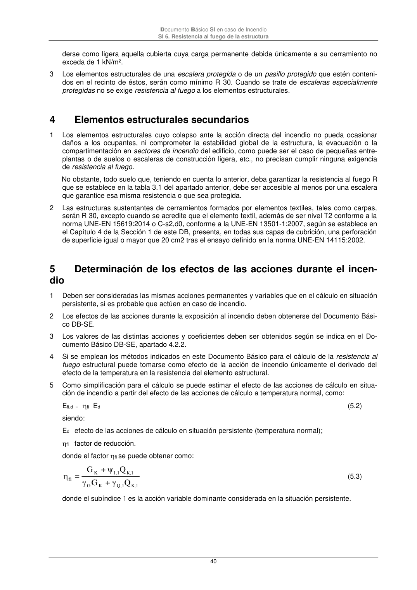

DB-SI · 4 Elementos estructurales secundarios · versión 2025-03-04 · capa oficial
Formatos: JSON compacto · Markdown · PDF fuente
Ámbito del documento · texto del ámbito · documento y tablas
ID técnico a0084 · PDF pág. 40 · jerarquía no validada por persona · contrastado con el literal de la página 40 (marcador PDF); no validado por persona · padre: a0080
Elementos estructurales secundarios 1 Los elementos estructurales cuyo colapso ante la acción directa del incendio no pueda ocasionar daños a los ocupantes, ni comprometer la estabilidad global de la estructura, la evacuación o la compartimentación en sectores de incendio del edificio, como puede ser el caso de pequeñas entre- plantas o de suelos o escaleras de construcción ligera, etc., no precisan cumplir ninguna exigencia de resistencia al fuego. No obstante, todo suelo que, teniendo en cuenta lo anterior, deba garantizar la resistencia al fuego R que se establece en la tabla 3.1 del apartado anterior, debe ser accesible al menos por una escalera que garantice esa misma resistencia o que sea protegida. 2 Las estructuras sustentantes de cerramientos formados por elementos textiles, tales como carpas, serán R 30, excepto cuando se acredite que el elemento textil, además de ser nivel T2 conforme a la norma UNE-EN 15619:2014 o C-s2,d0, conforme a la UNE-EN 13501-1:2007, según se establece en el Capítulo 4 de la Sección 1 de este DB, presenta, en todas sus capas de cubrición, una perforación de superficie igual o mayor que 20 cm2 tras el ensayo definido en la norma UNE-EN 14115:2002. 5

PDF fuente redistribuible: copia fiel enlazada en esta página (SHA256 verificado).